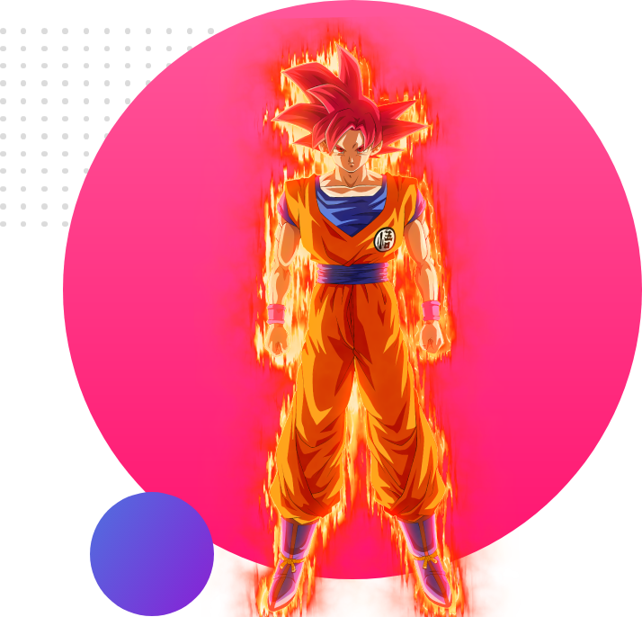

Welcome TO
Dragon Ball Z World!
BLACK GOKU THE STORY OF TOW EARING
Goku Black (ゴクウブラック Gokū Burakku), usually referred to as Black, is the main
antagonist of the
"Future" Trunks Saga of Dragon Ball Super. His true identity is Zamasu (ザマス Zamasu) from the
unaltered
main
timeline within Universe 10. He is a former North Kai and Supreme Kai apprentice serving his
former
master
Gowasu.
Goku Black visited Universe 6, went to the Super Dragon Balls from the unaltered main timeline
within
that
universe, summoned Super Shenron from said timeline, wished to switch bodies with Goku from the
unaltered
main
timeline within Universe 7, and Super Shenron granted Goku Black's wish. Goku Black sought to
destroy
all
mortals alongside Future Zamasu.[3] He was then given the name "Goku Black" by Future Bulma when
he
initially
referred to himself as Goku.
VIGITA THE KING
OF SAIYAN!
Vegeta (ベジータ Bejīta), more specifically Vegeta IV (ベジータ四世 Bejīta Yonsei)[6], recognized as Prince Vegeta
(ベジータ王子 Bejīta Ōji) is the prince of the fallen Saiyan race and one of the main characters of the Dragon
Ball series.
Regal, egotistical, and full of pride, Vegeta was once a ruthless, cold-blooded warrior and outright
killer,[7] but later abandons his role in the Frieza Force, instead opting to remain and live on Earth.
His character evolves from villain, to anti-hero, then to hero through the course of the series,
repeatedly fighting alongside the universe's most powerful warriors in order to protect his new home and
surpass Goku in power.[8]
GOKU THE GOD
OF SAIYAN!
Son Goku (孫そん悟ご空くう Son Gokū), born Kakarot (カカロット Kakarotto), is the main protagonist of the Dragon Ball metaseries. Goku is a Saiyan male originally sent to destroy Earth as an infant. However, a head injury at an early age alters his memory, ridding him of his initial destructive nature and allowing him to grow up to become one of Earth's greatest defenders. He constantly strives and trains to be the greatest warrior possible, which has kept the Earth and the universe safe from destruction many times.[22]>


.png)